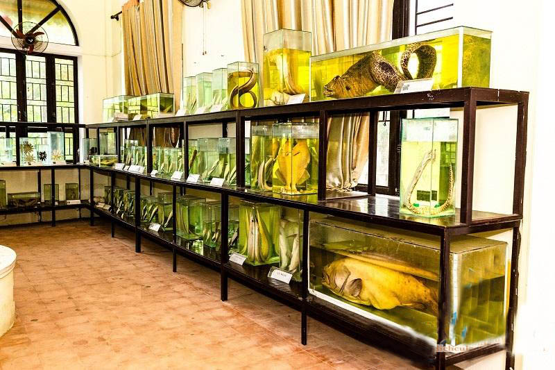

Table des matières
- Première Semaine - Sapa ? Ou autres
- Voyage humanitaire et touristique
-
- Jour 1, Hanoï - Hanoï 60km - 1.5h Sam 28 Juin - La Passion Classic Hôtel
- Jour 2, Hanoï - Sơn Tây & Ba Vi - Hanoï 60km - 1.5h Dim 29 Juin - La Passion Classic Hôtel
- Jour 3, Hanoï - Ninh Binh - Thanh Hoa 180km - 4h Lun 30 Juin - Muong Thanh Grand Thanh Hoa Hôtel
- Jour 4, Thanh Hoa - Hà Tĩnh 200km - 4h Mar 1 Juillet - Seabird Hôtel
- Jour 5, Ha Tinh - Quang Binh - Huế 320km - 6.5h Mer 2 Juillet - Cherish Huế Hôtel
- Jour 6, Huế - Huế 0h Jeu 3 Juillet - Cherish Huế Hôtel
-
- 07h30 La Cité impériale de Hué Hoàng Thành Huế
- le Musée des antiquités royales de Huế Bảo tàng Cổ vật Cung đình
- Pagode Thien Mu chùa thiên mụ huế
- visite de l’orphelinat Phú Thượng, Phú Vang District, Thừa Thiên Huế
- Après-midi Pagode Huyen Khong, "Chùa Huyền Không" dans le village Huong Ho
- Retour à l’hôtel en fin d’après-midi. Temps libre
- Jour 7, Huế - Da Nang - Hội An 135km - 3h Ven 4 Juillet - Delicacy Hôtel & Spa
- Jour 8, Hội An 8h Sam 5 Juillet - Delicacy Hôtel & Spa
-
- 8h00 Accueil et transfert au port de Cửa Đại
- 9h00 Arrivée sur "Chàm Islands", visite des sites et des vestiges
- Ancien puits des Cham
- Pagode Hai Tang "Chùa Hải Tạng" et marché Tân Hiệp "Chợ Tân Hiệp"
- 10h00 Transfert en canoë à la station écologique Bãi Chồng, "Bãi Chồng Cù Lao Chàm"
- 11h30 Retour au restaurant Cham à Bãi Chồng
- 14h00 Retour au Port de Cửa Đại
- 15h00 Transfert à votre hôtel à Hội An
- Jour 9, Hội An - Quy Nhon - Nha Trang 500km - 9h Dim 6 Juillet - Libra Nha Trang Hôtel
- Jour 10, Nha Trang Lun 7 Juillet - Libra Nha Trang Hôtel
- Jour 11, Nha Trang - Phan Rang - Hô Chi Minh Ville 400km - 7h Mar 8 Juillet - Adora Art Hôtel
- Jour 12, Hô Chi Minh Ville (Sài Gòn) Mer, 9 Jul, 2025 - Adora Art Hôtel
- Jour 13, Hô Chi Minh Ville (Sài Gòn) - Ben Tre - Ville de Vĩnh Long 150km - 3.5h Jeu, 10 Jul, 2025 - Sài Gòn Vĩnh Long Hôtel
- Jour 14, Ville de Vĩnh Long - Long Xuyên - Chau Doc 180km - 4h Ven 11 Juillet - Chau Pho Hôtel
- Jour 15, Chau Doc - Hô Chi Minh Ville 280km - 5.5h Sam 12 Juillet - Adora Art Hôtel
- Jour 16, Hô Chi Minh Ville - Journée libre Dim 13 Juillet - Adora Art Hôtel
- Jour 0 – Vol de Hô Chi Minh-Ville à Taipei Lun 14 Juillet - Nuit en vol
- Découverte touristique de TAIWAN
-
- KHÁM PHÁ DU LỊCH ĐÀI LOAN (TAIWAN) 2024
- Nuit 1 Dimanche 13 Juillet - NUIT DANS L'AVION - HCM – AÉROPORT DE TAIYUAN – TAIPEI
- Jour 1 - Lundi 14 Juillet - TAIPEI – MUSÉE DU PALAIS – PALAIS COMMÉMORATIF - NIEM TRUNG CHINH - TEMPLE LONG SON
- Jour 2 - Mardi 15 Juillet - TAIPEI – PARC YELIU – CASCADES - SHIFEN – VIEILLE VILLE DE JIUFEN (3 repas)
- Jour 3 - Mercredi 16 Juillet - TAIPEI – TAICHUNG – LAC DU SOLEIL ET DE LA LUNE - TEMPLE VAN VO - VILLAGE CULTUREL DES NEUF TRIBUS
- Jour 4 - Jeudi 17 Juillet - Tainan – Parc national d’Alishan – Village Hinoki (3 repas inclus)
- Jour 5 - Vendredi 18 Juillet - MONTAGNE DE SEL DE QIGU – PARC NATIONAL DE TAIJIANG – LA VIEILLE VILLE D'AN BINH (3 repas inclus)
- Jour 6 - Samedi 19 Juillet - PHAT QUANG SON - LAGON DE LIEN TRI
- Jour 7 - Dimanche 20 Juillet - KAOHSIUNG – AÉROPORT – Hô Chi Minh Ville (Petit-déjeuner)
- Lundi 21 Juillet - Hô Chi Minh Ville - AEROPORT Tan Son Nhat Intl - Paris CDG - Durée 12h55
- Taiwan www.diplomatie.gouv.fr
- Assurances BoursoBank Carte ULTIM FRBOTY03361 Applicable au 1er juillet 2024
- Revolut
- Santé, vaccins et autres
- eSIM
- Vêtements & Accessoires moto
- Sur moi pour vol
- Sur moi pour 1er semaine
- Sacoche banane
- Sac à dos Kaki (sac cabine 40x30x15cm < 2kg)
-
- Pochette Vol - Grise - 440g - Sac cabine
- Pochette Sac à dos - Verte - Semaine1 - Valise cabine
- Pochette Toilette / Médocs - Rouge - Semaine1 - Valise cabine
- Pochette Veste imper + Doudoune + sweat - Blanche - Semaine1 - Valise cabine
- Filet Moto - Gris - Semaine1 - Valise enregistrée
- Filet poche intérieure - Jaune - 680g - Semaine1 - Sac cabine
- Poches extérieures - 570g - Semaine1 - Sac cabine
- Delsey Grise (valise cabine 55x35x23cm < 10kg)
-
- Autres - 1450g - Valise cabine
- Pochette toilette / Médocs - Rouge - poids 1210g - Valise cabine
- Pochette Sous-vêtements - Bleu - poids 500g - Valise cabine
- Grande pochette vêtements - Bleu - poids 3700g - Valise cabine
- Sac tube orange fluo étanche léger - poids ???
- Pochette Veste imper + Doudoune + sweat - Blanche - 1050g - Valise cabine
- Delsey Marron (Valise enregistrée < 23kg)
10h00 Départ de la maison pour aéroport CDG
11h30 Aéroport pour formalité, police etc ..
14h00: Départ du Vol
Référence(s) dossier compagnie aérienne VN (Code de réservation Vietnam Airlines): NODD9G
Numéro du billet: voir Bitwarden
 |
 |
Départ 21 Juin 14:00 Paris, (Charles De Gaulle) (+)
Arrivée 22 Juin 06:30 Hanoi, (Noi Bai Intl) (+)
Accéder à la rubrique Gérer les réservations pour consulter les normes de bagages autorisées.
Franchise de bagage: 2 Bagage 23kg (Les dimensions totales maximales (longueur, largeur, hauteur) d'un bagage enregistré ne dépassent pas 158 cm)
| 23kg |
 |
| 23kg |
|
Bagage à main : https://www.vietnamairlines.com/fr/fr/travel-information/baggage/baggage-allowance-hand-baggage
Classe Premium Économie/Économie : le poids total des bagages à main ne doit pas dépasser 12 kg. Comprend 1 pièce (ne dépassant pas 10 kg) et 1 accessoire. Les bagages à main doivent pouvoir être rangés sous le siège ou dans le coffre à bagages en cabine de l'avion...
-
Comprend 1 pièce (ne dépassant pas 10 kg) : 56 cm x 36 cm x 23 cm < 115 cm
-
et 1 accessoire : 40 cm x 30 cm x 15 cm < 85 cm
| 10 kg max |
+ 2kg ou total < 12kg |
Arrivée 22 Juin 06:30 Hanoi, (Noi Bai Intl) (+) (soit 01:30 heure de Paris)
La Passion Classic Hôtel (Chambre Deluxe - vue sur la ville) SI POSSIBLE ç-à-d le même hotel que la semaine suivante, Samedi 28 juin
https://www.diplomatie.gouv.fr/fr/conseils-aux-voyageurs/conseils-par-pays-destination/vietnam/
Il convient d’être bien assuré en cas d’accident et, pour les deux roues, d’avoir un permis de conduire adapté à la cylindrée de son véhicule.
En cas d’accident grave, il est conseillé de se mettre sous la protection de la police (en composant le numéro gratuit 113) et de prendre contact avec l’ambassade de France à Hanoï (+84 24 39 44 57 00) ou le consulat général de France à Hô Chi Minh-Ville (+84 28 35 20 68 00).
Le niveau de criminalité de droit commun reste faible dans la plupart des régions. On observe toutefois une tendance au développement de la petite délinquance à Hanoï et de manière plus marquée à Hô Chi Minh-Ville ainsi que dans les régions touristiques (Sa Pa et Nha Trang notamment).
Cette délinquance ciblée vise les étrangers et plus précisément les touristes. Elle se traduit essentiellement par des vols à l’arraché (souvent effectués à moto), des vols par des pickpockets, voire des escroqueries.
Les conseils de prudence élémentaire doivent donc être suivis : il est préférable de laisser les passeports dans le coffre de l’hôtel et d’en faire une photocopie pour circuler, être vigilant quand on retire de l’argent aux distributeurs automatiques de billets dans les quartiers touristiques et prêter attention à ses effets personnels.
Datant au 3e siècle avant JC, selon les légendes.
 |
Ancienne capitale de Cổ Loa
un tour d’orientation autour du lac Hoan Kiem
 |
Opéra de Hanoï
 |
la statue Ly Thai To
Une balade libre à pied dans les ruelles du vieux quartier de Hanoï vous permettra de bien appréhender la vie locale de la capitale.
 |
ruelles du vieux quartier de Hanoï
Environ 1h30 de route, (2 minibus de 16 chaises),
l’ascension au sommet 1200 m par nos minibus, temps pour balader et faire des photos de la belle nature. (Option 1 : ascension 1000 marches facile au temple de Hô Chi Minh. Option 2 : ascension 500 marches raides au temple Mẫu)
 |
Ba Vi
En Descendant de la montagne : découvrir les reliques ( les ruines) de l'ancienne église, des anciennes villas coloniales... la forêt de pins...
Ancienne église
Après-midi : route de retour à Hanoï avec découverte de la pagode chua THAY ( pagode du Maitre)
 |
Pagode chua THAY

07h30: départ pour Ninh Binh, ...
 |
Tràng An
Tràng An est classifié dans la liste de vestiges naturels et culturels par l'Unesco en 2014.
Promenade en sampan à Tràng An, (3 heures de sampan) sur la petite rivière tranquille dans la zone écologique de Tràng An à travers des grottes.
Plus 500 marche ! Pour une vue panoramique de la région
Hang Múa

Route pour Hà Tĩnh et visite de l’école Yên Hồ, district de Đức Thọ
école Yên Hồ

Départ pour Quảng Bình & Huế : avec des arrêts :
les dunes de sables (dunes de Nhân Duc/ ou dunes de Gio Linh)
https://atypikvietnam.com/dong-hoi/
Dong Hoi est la capitale de Quang Binh, une province côtière du Centre-Nord du Vietnam. Dong Hoi est aussi la terre du Vietnam avec environ 40 kilomètres d’est en ouest. Accrochée à la rive du fleuve Nhat Le, Dong Hoi se trouve à environ 486 kilomètres au sud de Hanoi, 160 kilomètres au nord de Hue et 1 204 kilomètres au nord de Hô Chi Minh Ville.
Grâce à sa situation centrale, Dong Hoi est en train de devenir un point d’arrêt attrayant pour les touristes voyageant de Hanoi à Hue et Hô Chi Minh. Le nom « Dong Hoi » dérive des mots « Đông Hải » (东海) en dialecte cantonais (Chine). Il signifie la « mer de l’est ». Comme son nom l’indique, Dong Hoi englobe un littoral de 12 kilomètres de long avec de magnifiques plages de sable.
Contrairement à la plupart des autres villes côtières du Vietnam, Dong Hoi n’est pas du tout bondée et encombrée. De nombreux touristes en visite ici sont grandement surpris par le calme de cette ville. Il y a très peu de circulation et encore moins de piétons. Par conséquent, Dong Hoi est le pays des merveilles pour les personnes qui recherchent la pleine conscience et la paix de l’âme.
... Outre la saison des pluies principale, les pluies de mai et juin peuvent parfois provoquer de grandes inondations....
 |
Ville de Đồng hới
 |
Quảng Bình Quan
 |
Citadelle de Đồng hới – Le vestige de la guerre du Vietnam La citadelle est maintenant située à proximité de la rue Hung Vuong, à 1500 mètres de la plage Nhat Le. Elle est proche de la rivière Nhat Le à l’est et de la forêt à l’ouest. La citadelle de Dong Hoi a été initialement construite sous la dynastie des Nguyen. Le premier roi des Nguyen, Gia Long (1802-1819), a commencé la construction en 1812 et son fils, le roi Minh Mạng (1820-1840), a reconstruit plus tard.
Marché de Đồng hới – Où vous pouvez vivre comme un local. Presque toutes les villes du Vietnam ont leur propre marché humide qui présente de nombreux points communs. Cependant, le marché humide de Dong Hoi est vraiment impressionnant. Non seulement il y a une diversité remarquable de fruits de mer vendus ici, mais le volume même de ces derniers est incroyable.
 |
En vous frayant un chemin à travers le marché, vous pouvez voir d’innombrables types d’espèces marines et divers légumes et fruits frais. Vous pouvez également trouver facilement toutes les épices traditionnelles et les ingrédients essentiels à la préparation d’un repas vietnamien. Il n’y a qu’au marché du Vietnam que vous pouvez acheter un seau plein de bébés pigeons et de couples de grenouilles pour moins de 10 dollars.
Après vous être jeté sur le trottoir et avoir roulé, vous devez vous rendre à l’intérieur du bâtiment du marché central et monter au deuxième étage. Là, debout sur un pont qui mène à un autre bâtiment du marché, vous vous trouverez à l’intérieur d’un grand espace de restauration au deuxième étage, bien que sombre et crasseux.
Les vendeurs sont si sympathiques. Malgré le dur labeur, ils gardent un sourire éclatant sur la bouche et crient souvent joyeusement « Bonjour » au touriste étranger. Ils ont peut-être l’air un peu bizarre avec leur casque de sécurité sur la tête toute la journée. Visiter le marché est l’un des meilleurs moyens de mieux comprendre la vie difficile des locaux. Enfin, n’oubliez pas de vous arrêter dans un café local pour découvrir la tradition vietnamienne de prendre un café tout en flânant dans la ville.

Visite de l’orphelinat Phú Thượng, Phú Vang District, Thừa Thiên Huế
 |
Après-midi Visiter la belle pagode Huyen Khong, "Chùa Huyền Không" dans le village Huong Ho,
Cinq morts et deux disparus. Voici le premier bilan du gouvernement après le passage du typhon Wutip qui a traversé le centre du Vietnam. Le ministère vietnamien de l’Agriculture a déclaré samedi soir que trois personnes avaient été tuées dans la province de Quang Tri et que deux autres personnes avaient été tuées et deux autres portées disparues dans la province de Quang Binh. Plus de 70.000 hectares de terres cultivées ont été inondés, selon le ministère.
 |
08h30: Route en directon de Đà Nẵng via le tunnel de Hải Vân,
The Hải Vân Tunnel, the second longest tunnel in Southeast Asia (after Singapore's 12.46 km (7.7 mi) long Kallang-Paya Lebar-Marina Central Expressway tunnel) and the longest in Vietnam at 6.28 km (3.90 mi), lies on Highway 1 between the two cities of Da Nang and Huế in central Vietnam.[1]
 |
quelques arrêts en route pour capturer des belles photos :
plage My Khe a Da Nang 'My Khe Beach',
et visite de la forêt des cocotiers d’eau "Coconut Forest Hội An"
Expérience de ramer les bateaux ronds en bambou
Transfert au port de Cửa Đại
 |
8h45: Rejoignez le groupe et embarquement pour départ vers l'île de Cham
 |
Musée maritime "Cham Museum Bảo tàng Cù Lao Chàm",
|  |
Ancien puits des Cham (Xom Câm (puits du village de Câm) situé dans le village de Câm, commune de Tân Hiêp)
Pagode Hai Tang "Chùa Hải Tạng" et marché Tân Hiệp "Chợ Tân Hiệp"
 |
La station écologique Bãi Chồng, "Bãi Chồng Cù Lao Chàm"
pause dans le restaurant pour laisser les bagages, changer les vêtements pour baignade.
10h20: Transfert en canoë à Hon Dai "Hon Giai" (parc de récifs coralliens) qui offre une large gamme d’activités: baignade et Snorkeling....
Déjeuner avec d’excellents fruits de mer de l'île de Cham
Après déjeuner, possibilité de baignade et de détente sur le hamac
Continuer la route vers Tuy Hòa (chef-lieu de la province de Phú Yên),
via Thị xã Sông Cầu, des beaux paysages côtiers, des villages de pêcheurs, des rizières, belles plages sauvages, élevages aquatiques, plusieurs arrêts pour les photos
A picture of Khoa Tran about Nha Trang city from the sky


Transfert à la station de bain de boue source d'eau chaude *( frais de bain de boue / eau chaude à votre charge)
Arrivée a Vinh Hy, un petit golfe très connu par la belle couleur de la mer, village de pêche, petite plage sauvage et la réserve nationale Núi Chúa "Parc national de Núi Chúa"
 |
Promenade en bateau dans la mer et arrêt à la petite plage.
et rencontre des enfants à Ninh Thuận
Puis déjeuner de spécialités locales, visiter les briqueteries, les artisanats des noix de coco : éplucher des noix de coco, bonbons de caramel, puis une balade en tuk tuk à travers les villages, jardins de Ben Tre sous l' ombrage des cocotiers.
89/72/2C duong 8 thang3, khom 5, phuong 5, Thi Xa Vĩnh Long
Le site de Oc Eẹ (une ville portière du royaume Fou-Nan entre 1er et 7è Siècle) 45 km de la ville de Long Xuyen.
Si la télécabine ne marche pas nous prenons les motos taxi (xe om)
Petit déjeuner
Journée libre pour la découverte personnelle de la ville et pour le repos.
Repas LIBRE.
|
Thời gian: 7 ngày 7 đêm |
Durée: 7 jours 7 nuits |
|
Điểm đón: sân bay Tân Sơn Nhất |
Point de prise en charge: aéroport Tân Sơn Nhất (code IATA SGN situé à Hô Chi Minh-Ville) |
|
Phương tiện: Máy bay & xe ô tô |
Moyens de transport: Avion & voiture |
|
hách sạn: 3 sao |
Hôtel: 3 étoiles |
|
Khởi hành: 13 - 20 Tháng 07 2025 |
Départ: 13 - 20 Juillet 2025 |
Taipei 101, anciennement Centre financier international de Taipei, est un gratte-ciel localisé dans le district de Xinyi, Taipei à Taïwan. Haut de 508 m, il était le plus grand gratte-ciel du monde de 2004 à 2010, jusqu'à l'inauguration du Burj Khalifa. |
Le mémorial de Tchang Kaï-chek est un monument national et mémorial érigé en mémoire de Tchang Kaï-chek, ancien président de la république de Chine. Il est situé dans le district de Zhongzheng de Taipei, à Taïwan. |

Vieille rue de Shifen ‧ Lieu historique à Nouveau Taipei. Avec voies ferrées, boutiques, restaurants et éclairage aux lanternes. |
Jiufen Old Street est une série de ruelles et un marché nocturne à Jiufen, à Taiwan. National Geographic a qualifié Old Street de « l'un des marchés nocturnes les plus emblématiques du pays ». |
Le marché nocturne de Raohe Street est un marché nocturne du district de Songshan, à Taipei, à Taïwan. |


|
ĐÊM 1 (NUIT 1) 13 T7 (Dimanche 13 Juillet) |
HCM – SÂN BAY ĐÀI VIÊN – ĐÀI BẮC | |
|---|---|---|
|
||
| Tối ngày 13 tháng 7 2025 lúc 22h25: Hướng dẫn viên Viettourist đón đoàn tại cổng sân bay quốc tế Tân Sơn Nhất làm thủ tục đón chuyến bay đến Đài Bắc – Đài Loan vào rạng sáng ngày 14 tháng 07 2025. | rSoirée du 13 juillet 2025 à 22h25 : Le guide touristique de Viettourist récupère le groupe à la porte de l' Aéroport international de Tan Son Nhat pour l'enregistrement du vol à destination de Taipei - Taiwan tôt le matin. 14 juillet 2025. | |
| Qúy khách nghỉ đêm trên máy bay. | Vous passerez la nuit dans l'avion. | |
ville Hô Chi Minh (SGN) --> TAIPEI (TPE) 14 Juillet 01:25 - 05:55 |
||


|
NGÀY 1 14 T7 |
ĐÀI BẮC – BẢO TÀNG CỐ CUNG – ĐÀI TƯỞNG NIỆM TRUNG CHÍNH – LONG SƠN TỰ (Ăn 3 bữa) |
||
|---|---|---|---|
|
Sáng: Đáp sân bay Đào Viên (thuộc Đài Bắc - Đài Loan), qúy khách làm thủ tục nhập cảnh. Qúy khách dùng điểm tâm sáng & khởi đầu ngày mới với các điểm tham quan: |
Matin : Arrivée à l'aéroport de Taoyuan (Taipei - Taiwan), vous effectuez les procédures d'immigration. Profitez du petit-déjeuner et commencez votre journée par une visite touristique : |
||
|
|||
| Khám phá Bảo tàng Cố cung - “Quốc bảo" nắm giữ lịch sử Đài Loan (Chưa bao gồm vé tham quan bên trong) | Explorez le Musée national du Palais - « Trésor national » qui renferme l'histoire de Taïwan (billet d'entrée à l'intérieur non inclus) | ||
|
|||
| Tham quan Đài Tưởng Niệm Trung Chính hay còn gọi là Quảng trường Tưởng Giới Thạch (CKS Memorial Hall) Công trình nhằm thể hiện sự tôn kính với một trong những nhà lãnh đạo quyền lực nhất của thế kỷ thứ 20 – Tưởng Giới Thạch, vị tổng thống đầu tiên của Trung Hoa Dân Quốc. | Visitez le mémorial de Chiang Kai-shek également connue sous le nom de place Chiang Kai-shek (CKS Memorial Hall) Le bâtiment est destiné à rendre hommage à l'un des Le dirigeant le plus puissant du XXe siècle – Chiang Kai-shek, le premier président de République de Chine. | ||
|
Le mémorial de Tchang Kaï-chek. Le bâtiment se situe dans le district de Zhongzheng, ... Ses parois sont en marbre blanc naturel. ... Son toit octogonal, inspiré du temple du Ciel de Pékin et recouvert de tuiles en verres de teinte bleu nuit, ... Depuis 1987, le théâtre national et la salle de concert nationale sont érigées en vis-à-vis sur la place. |
|||
|
Trưa: Đoàn ăn trưa tại nhà hàng & tiếp tục di chuyển đến: |
Déjeuner : Le groupe déjeune au restaurant et continue son déplacement vers : | ||
Wikipédia: Le temple Longshan, aussi appelé temple Longshan de Manka, est un temple bouddhiste situé dans le district de Wanhua de Taipei, à Taïwan. |
|||
| Khám phá Long Sơn Tự - ngôi chùa cổ kính mang đậm nét tín ngưỡng tại Đài Bắc | Découvrez le temple Longshan - un ancien temple aux fortes croyances religieuses à Taipei | ||
|
|||
| Chụp ảnh bên ngoài và ngắm nhìn Tòa tháp Taipei 101 - đây là tòa nhà cao nhất và là biểu tượng cho sự phát triển của Đài Loan, ngắm nhìn toàn cảnh thủ đô Đài Bắc (không bao gồm vé lên đỉnh tháp) | Prenez une photo à l'extérieur et admirez la tour Taipei 101 - c'est le plus haut bâtiment et le symbole de Taipei. symbole du développement de Taiwan, vue panoramique de Taipei (hors billet pour le sommet de la tour) | ||
|
Tối: Đoàn nhận phòng khách sạn & ăn tối tại nhà hàng - nghỉ đêm tại khách sạn hoặc tự do khám phá Đài Bắc về đêm.
|
|||
|
Marché nocturne de Ximending Situé dans le quartier commerçant à la mode de Taipei, le marché de nuit de Ximending associe l’effervescence de la culture des jeunes aux plats traditionnels du marché de nuit. En vous promenant dans ce quartier animé, vous rencontrerez une multitude d’artistes de rue et d’échoppes. Ne manquez pas le poulet frit à la taïwanaise et le thé au lait en bulles. |
|||
| Chợ Tây Môn Đinh (Ximending) - nơi đây không chỉ là thiên đường ẩm thực mà còn là nơi mua sắm lý tưởng với nhiều cửa hàng thời trang, phụ kiện và quần áo. Đoàn có cơ hội trải nghiệm những hoạt động giải trí và mua sắm đa dạng và thú vị. | Marché de Ximending - cet endroit n'est pas seulement un paradis culinaire mais aussi un Lieu de shopping idéal avec de nombreux magasins de mode, d'accessoires et de vêtements. Le groupe a une chance. Découvrez une variété d’activités de divertissement et de shopping passionnantes. | ||


Wikipédia: Le temple Longshan, aussi appelé temple Longshan de Manka, est un temple bouddhiste situé dans le district de Wanhua de Taipei, à Taïwan. |
Le musée national du Palais, est un musée de Taipei, république de Chine, qui a recueilli les collections du palais impérial de la Cité interdite de Pékin. Le musée national du Palais abrite quelque 700 000 pièces d'art chinois, dont la plus grande collection d'objets artisanaux chinois du monde. Wikipédia |
|


|
NGÀY 2 15 T7 |
ĐÀI BẮC – CÔNG VIÊN DÃ LIỄU – THÁC NƯỚC THẬP PHẦN – PHỐ CỔ CỬU PHẦN (Ăn 3 bữa) |
||
|---|---|---|---|
|
Sáng: : Qúy khách dùng bữa sáng tại khách sạn & Xe và HDV khởi hành tham quan: |
Matin : Vous prenez le petit déjeuner à l'hôtel et partez en voiture et avec votre guide pour visiter : |
||
|
|||
|
Công viên địa chất Dã Liễu (Yehliu): Là một trong những kỳ quan thiên nhiên nổi tiếng nhất trên thế giới, với các lớp có hình dạng đặc biệt được tạo thành từ nấm đá và đá gừng, đá vôi, giày cổ tích, đá đất và đá phiến. |
Géoparc de Yehliu : l'une des merveilles naturelles les plus célèbres le monde, avec des couches de formes spéciales constituées de champignons et de roches de gingembre, Calcaire, ardoise, pierre de terre et ardoise. Wikipédia: Yehliu est une péninsule et un géoparc, sur la côte nord de Taïwan, entre Taipei et Chilung, célèbre pour de curieuses figures formées par l'érosion. |
||
|
|||
|
Đường cổ Thập Phần (Shifen Old Street) với tuyến đường sắt cổ tại đây Quý khách cũng có thể tự tay viết những lời cầu nguyện lên đèn lồng và đốt nến để thả đèn lên trời. Điều thú vị là tất cả các cửa hàng bán đèn lồng, quà lưu niệm và nơi thả đèn đều nằm ở Shifen Old Street, ngay tuyến đường sắt cổ. Được xây dựng để vận chuyển than, giờ đây, nó đã trở thành tuyến đường sắt du lịch đưa du khách đi dạo quanh thị trấn, vòng qua sườn núi. Quý khách sẽ đứng ngay trên tuyến đường sắt này để thả đèn lồng (04 khách/ lồng đèn) |
Shifen Old Street avec l'ancienne ligne de chemin de fer ici, vous pouvez également Vous pouvez écrire vos propres souhaits sur la lanterne et allumer la bougie pour libérer la lanterne dans le ciel. Amusant car tous les magasins vendant des lanternes, des souvenirs et des endroits pour lâcher des lanternes sont situés dans le vieux Shifen Rue, juste sur l'ancienne voie ferrée. Construit pour transporter du charbon, il est aujourd'hui devenu un Le chemin de fer touristique emmène les visiteurs à travers la ville, serpentant autour du flanc de la montagne. Vous serez Placez-vous sur cette voie ferrée pour lâcher des lanternes (4 invités/lanterne) |
||
|
Parc géologique de Yehliu. TripAdvisor: Le Magnifique site géologique où les rochers ont été sculptés par l'érosion, à ne pas manquer lors d'un séjour à Taïwan. La vue sur les falaises et l'océan ... |
TripAdvisor: C'est une vielle rue juste exceptionnelle. Elle est traversée par une voie ferrée et on va sur celle ci pour envoyer une lanterne dans le ciel avec nos ... |
||
|
Trưa: Đoàn ăn trưa tại nhà hàng & tiếp tục di chuyển đến: |
Déjeuner : Le groupe déjeune au restaurant et continue son chemin vers : |
||
|
Tham quan Phố cổ Cửu Phần (Jiufen) - ngôi làng nằm trên núi Keelung. Làng được xây dọc theo sườn núi gồm 4 lớp kiến trúc chia theo độ cao. Làng tên Cửu Phần bởi trước đây nơi này chỉ có 9 gia đình sinh sống. Mỗi khi mua hàng chuyển từ dưới núi lên họ đều đặt 9 phần cho mỗi sản phẩm. Dần dà Cửu Phần đã trở thành tên gọi của ngôi làng và nay trở thành điểm du lịch nổi tiếng của Đài Loan. |
Visitez Jiufen Old Street - un village situé sur la montagne Keelung. Le village a été construit le long du flanc de la montagne se compose de 4 couches architecturales divisées par la hauteur. Le village s'appelle Jiufen parce que cet endroit était autrefois Il n'y a que 9 familles qui vivent ici. Chaque fois qu'ils achètent des marchandises expédiées du bas de la montagne, ils commandent 9 pièces pour chaque produit. Peu à peu, Jiufen est devenu le nom du village et est maintenant une destination touristique célèbre à Taiwan. |
||
|
https://www-foreignersintaiwan-com : Jiufen doit son nom aux neuf familles qui s'y sont installées sous la dynastie Qing et qui demandaient neuf portions de cargaison à chaque arrivée (九Jiu = neuf, 份Fen = portion). La découverte d'or dans la région a 九 déclenché une ruée vers l'or qui a duré jusqu'à la fin de l'ère japonaise. Lorsque l'exploitation aurifère a pris fin en 1971 , la ville a commencé à décliner. Après le tournage du film « La Cité des tristesses » , la ville a connu un essor touristique. Français La ville a également commencé à accueillir de nombreux visiteurs, notamment du Japon, après 2001 en raison de la ressemblance de la ville avec celle du Voyage de Chihiro , même si Miyazaki a déclaré que Jiufen n'avait pas été l'inspiration du film. |
|||
|
|||
|
Khám phá Thác nước Thập Phần được mệnh danh là "Niagara của Châu Á" – quý khách sẽ cảm nhận được vẻ hoang sơ vốn có ở nó |
Explorez les chutes Shifen, connues sous le nom de « Niagara d'Asie » – vous ressentir la sauvagerie inhérente à celle-ci |
||
|
|||
|
Trải nghiệm làm đặc sản bánh dứa - Một loại bánh nổi tiếng tại Đài Loan với nhân được làm từ dứa, mật ong và có thể thêm cả trứng muối. |
Expérience de fabrication de gâteau à l'ananas - Un gâteau célèbre à Taiwan avec une garniture à base d'ananas, de miel et peut être additionné d'œufs salés. |
||
|
Tối: Sau bữa tối, quý khách về khách sạn nghỉ ngơi hoặc tự do tham quan và khám phá ẩm thực. |
Soirée : Après le dîner, vous retournez à l'hôtel pour vous reposer ou explorer librement et découvrir la cuisine. |
||


|
Chutes Shifen. Après une marche d'un quart d'heure ( attention il y a des escaliers), on arrive à ces cascades. Il y a un circuit qui passe par différents points de vue sur cette cascade. A coté, il y a des stands de restauration et des toilettes. Ces cascades sont magnifiques et en pleine nature. |
Jiufen Old Street est une série de ruelles et un marché nocturne à Jiufen, à Taiwan. National Geographic a qualifié Old Street de « l'un des marchés nocturnes les plus emblématiques du pays ». Wikipédia (anglais) |
|


|
NGÀY 3 16 T7 |
ĐÀI BẮC – ĐÀI TRUNG – HỒ NHẬT NGUYỆT - MIẾU VĂN VÕ – LÀNG VĂN HÓA CỬU TỘC |
|---|---|
|
Sáng: : 08h00 Ăn sáng Buffet & trả phòng khách sạn, Xe và HDV đưa đoàn đi tham quan: |
Matin : 08h00 Petit-déjeuner buffet et départ de l'hôtel. La voiture et le guide emmènent le groupe visiter : |
|
Dạo thuyền trên Hồ Nhật Nguyệt – hồ nước thiên nhiên lớn nhất Đài Loan gồm một hồ lớn và một hồ nhỏ liền nhau, được bao bọc bởi màu xanh bạt ngàn của những dãy núi xung quanh, từng là điểm nghỉ dưỡng ưng ý nhất của Tưởng Giới Thạch. |
Croisière sur le lac Sun Moon – le plus grand lac naturel de Taïwan composé d'un grand lac et un petit lac à côté, entouré par le vaste vert des montagnes environnantes, C'était autrefois le lieu de villégiature préféré de Chiang Kai-shek. |
|
Miếu Văn Võ – được thiết kế theo lối kiến trúc đặc trưng của đền chùa Đài Loan truyền thống, những ngôi miếu được dựng thành 1 hệ thống kiến trúc trải dài trên triền đồi từ thấp đến cao. |
Temple Wen Wu – conçu dans le style architectural typique des temples traditionnels taïwanais, Les temples ont été construits dans un système architectural s'étendant sur les flancs des collines, du plus bas au plus haut. |
|
Trưa: Đoàn thưởng thức bữa trưa tại nhà hàng. Sau bữa trưa, đoàn khởi hành về lại Đài Trung. |
Déjeuner : Le groupe profite du déjeuner au restaurant. Après le déjeuner, le groupe est reparti pour Taichung. |
|
Đi Cáp treo đến Làng văn hóa Cửu tộc – nơi lưu giữ những nét đẹp độc đáo của đảo Đài Loan. Qúy khách chiêm ngưỡng cảnh đẹp ở làng văn hóa Cửu Tộc & tham gia các khu vui chơi ngoài trời với hàng loạt các trò chơi mang cảm giác mạnh. |
Prenez le téléphérique jusqu'au village culturel aborigène de Formose, un lieu qui préserve la beauté unique de l'île de Taïwan. Prêt. Vous pourrez admirer les magnifiques paysages du village culturel de Cuu Toc et participer aux espaces de divertissement. Jouez en plein air avec une variété de jeux passionnants. |
|
Chiều: Quý khách thưởng thức bữa tối Lẩu Buffet 1 tiếng với các món đặc trưng Đài Loan. |
Après-midi : Profitez d'un dîner buffet Hot Pot d'une heure avec des spécialités taïwanaises. |
|
Tối: Sau bữa tối, xe đưa đoàn đến khách sạn Đài Trung làm thủ tục nhận phòng và nghỉ ngơi. Tự do khám phá chợ đêm Phùng Giáp vô cùng nổi tiếng trong các địa điểm chợ đêm. : |
Soirée : Après le dîner, la voiture emmène le groupe à l'hôtel de Taichung pour l'enregistrement et le repos. Explorez librement le marché nocturne de Phung Giap, extrêmement célèbre parmi les lieux de marché nocturne. |
|
Le lac du Soleil et de la Lune est la plus grande étendue d’eau à Taïwan, mais aussi un lieu touristique important classifié en tant que National Scenic Area. Wikipédia |
Lac du Soleil et de la Lune. Situé dans le canton de Yuchi, dans le comté de Nantou, la région alentour au Lac du Soleil et de la Lune est le lieu de vie de la tribu thao, l'une des tribus ... |
Le temple Wenwu du lac du Soleil et de la Lune est un temple Wenwu situé sur le périmètre du lac du Soleil et de la Lune dans le canton de Yuchi, comté de Nantou, à Taïwan. Wikipédia |


|
NGÀY 4 17 T7 |
FORÊT NATIONALE DE TAINAN-ALISHAN LÀNG Hinoki (Ăn 3 bữa) |
|---|---|
|
Sáng: : 08h00 Ăn sáng Buffet & làm thủ tục trả phòng. Xe và HDV đón đoàn tham quan: |
Matin : 08h00 Petit-déjeuner buffet et départ. Une voiture et un guide touristique viennent chercher le groupe pour visiter : |
|
Rừng Quốc gia Alishan – quý khách ngắm cảnh quan ven đường với những dãy núi hùng vĩ mờ ảo trong màn sương mây trắng xóa, hay hàng đào chuông dọc đường… |
Forêt nationale d'Alishan – profitez du paysage au bord de la route avec des chaînes de montagnes majestueuses brumeux dans la brume blanche, ou des rangées de pêchers en forme de cloche le long de la route... |
|
Trải nghiệm 1 chiều ngồi xe lửa đỏ xuyên rừng - tàu đi qua những khúc cua ngoặt quý khách có thể chụp được những chiếc ảnh đẹp với hình ảnh đầu tàu xuyên rừng. |
Vivez un voyage aller simple en train rouge à travers la forêt - le train prend des virages serrés pour vous. Peut prendre de belles photos avec l'image du train à travers la forêt. |
|
Thư giãn tản bộ trên con đường mòn Gian Trees Trail xuyên qua khu rừng có những cây bách khổng lồ. |
Balade relaxante sur le sentier des arbres de Gian à travers la forêt d'arbres cyprès géant |
|
ngắm khu rừng cây bách ngàn năm tuổi từ dưới thung lũng. |
Admirez la forêt de cyprès millénaire depuis la vallée en contrebas. |
|
Dạo quanh Hồ Tỷ Muội – tuy hoang sơ nhưng khung cảnh thơ mộng, tuyệt sắc tựa như chốn thần tiên. |
Balade autour du lac Ty Muoi - bien que sauvage, le paysage est poétique et beau comme royaume des fées |
|
Chiều: Xe và hướng dẫn viên địa phương đón đi tham quan: |
Après-midi : Prise en charge en voiture et avec un guide local pour visiter : |
|
Làng Hinoki - Nhật Bản bình yên giữa lòng Đài Loan. Nơi mà bạn như bước vào một thế giới khác. Với kiến trúc truyền thống Nhật Bản, không gian thanh bình của thiên nhiên và sự thay đổi ấn tượng qua từng mùa |
Hinoki Village - Le Japon paisible au cœur de Taiwan. Où vous entrez dans un autre monde autre monde Avec une architecture japonaise traditionnelle, un espace paisible de nature et des changements impressionnants au fil des saisons |
|
NGÀY 5 18 T7 |
NÚI MUỐI QIGU – VƯỜN QUỐC GIA ĐÀI GIANG – PHỐ CỔ AN BÌNH (Ăn 3 bữa) |
|---|---|
|
Sáng: : Đoàn ăn sáng & đến giờ hẹn, khởi hành tham quan chụp ảnh: |
Matin : Le groupe prend son petit-déjeuner et arrive à l'heure convenue, puis part pour faire du tourisme et de la photographie : |
|
Núi Muối Qigu hay còn gọi là núi muối Thất Cổ là một địa danh du lịch khá nổi tiếng ở thành phố Đài Nam. Từ xa nhìn lại thì nơi đây giống như 1 ngọn núi được phủ lớp tuyết trắng xoá. |
La montagne de sel de Qigu, également connue sous le nom de montagne de sel de That Co, est un lieu destination touristique assez célèbre dans la ville de Tainan. Regarder en arrière de loin alors cet endroit est comme une montagne couverte de neige blanche. |
|
Vườn quốc gia Đài Giang - Qúy khách có thể tham quan các đầm lầy ngập mặn, quan sát động vật hoang dã, thăm các đền cổ xưa, và khám phá Bảo tàng Cá Voi độc đáo. Công viên còn có nhiều cảnh quan đa dạng và di tích văn hóa quan trọng. |
Parc national de Taijiang - Vous pouvez visiter le mangroves, observation de la faune, visites de temples ancien et explorez l'unique musée des baleines. Le parc possède également de nombreux paysages diversifiés et vestiges culturels importants |
|
Trưa: Qúy khách ăn trưa tại nhà hàng. Sau đó, tiếp tục tham quan: |
Déjeuner : Vous déjeunez au restaurant. Continuez ensuite à visiter : |
|
Khám phá vẻ cổ kính trầm mặc của phố cổ An Bình, Pháo Đài An Bình & Nhà gỗ An Bình. |
Explorez la beauté ancienne et tranquille de la vieille ville d'An Binh, de la forteresse d'An Binh et de la maison en bois d'An Binh. |
|
Chiều: Quý khách thưởng thức bữa tối & về khách sạn Đài Nam nghỉ ngơi.: |
Après-midi : Profitez du dîner et retournez à l'hôtel de Tainan pour vous reposer. |
|
Taijiang National Park |
Anping Fort (Anping gubao) |
Vieille rue d'Anping |

|
NGÀY 6 19 T7 |
PHẬT QUANG SƠN – ĐẦM LIÊN TRÌ (Ăn 3 bữa) |
|---|---|
|
Sáng: : Đoàn ăn sáng, đến giờ trả phòng. Đoàn di chuyển đến Cao Hùng: |
Matin : Petit déjeuner en groupe, heure de départ. Le groupe s'est installé à Kaohsiung : |
|
Viếng thăm Phật Quang Sơn là công trình kiến trúc tiêu biểu, đại diện cho sự giao thoa giữa các yếu tố hiện đại và truyền thống, cổ kim đông tây của Đài Loan. |
Visitez Fo Guang Shan, une œuvre architecturale typique, représentant l'intersection entre éléments modernes et traditionnels, anciens et modernes, à l'est et à l'ouest de Taiwan. |
|
Viếng thăm Phật Quang Sơn là công trình kiến trúc tiêu biểu, đại diện cho sự giao thoa giữa các yếu tố hiện đại và truyền thống, cổ kim đông tây của Đài Loan. |
Visitez Fo Guang Shan, une œuvre architecturale typique, représentant l'intersection entre éléments modernes et traditionnels, anciens et modernes, à l'est et à l'ouest de Taiwan. |
|
Le Musée du Bouddha de Fo Guang Shan est situé à Dashu, Kaohsiung, île de Taïwan, République de Chine. C’est un ensemble de constructions à la fois traditionnelles et modernes, munies de fonctions culturelles et éducatives, et un lieu de pratique de sagesse et de compréhension. Wikipédia |
|
|
Tham quan Đầm Liên Trì Nơi đây nổi tiếng với khung cảnh thiên nhiên tuyệt vời, những mặt hồ bao la, bạt ngàn. Khu danh thắng Đầm Liên Trì với tổ hợp các thắng cảnh tâm linh độc đáo cùng những mô hình Tháp Long Hổ kỳ bí, những khu ngập nước thơ mộng. |
Visitez la lagune de Lien Tri. Cet endroit est célèbre pour ses magnifiques paysages naturels, vaste lac Zone panoramique de la lagune de Lien Tri avec un complexe unique de paysages spirituels avec des modèles mystérieux de Dragon Tiger Tower et des zones inondées poétiques. |
|
tham quan Tháp Long Hổ cùng Đình Xuân Thu nằm ở phía Nam của đầm. |
Visitez la tour Long Ho et le temple Xuan Thu situés au sud de la lagune. |
 Les pagodes du Dragon et du Tigre sont un temple situé au lac Lotus dans le district de Zuoying, à Kaohsiung, à Taiwan. Le temple a été construit en 1976. L'une des tours est la Tour du Tigre, l'autre est la Tour du Dragon. Wikipédia (anglais) |
 Le lac du Soleil et de la Lune est la plus grande étendue d’eau à Taïwan, mais aussi un lieu touristique important classifié en tant que National Scenic Area. Wikipédia |
|
Chiều: Xe và hướng dẫn viên địa phương đón quý khách thưởng thức bữa tối & di chuyển khách sạn Cao Hùng làm thủ tục nhận phòng và nghỉ ngơi. |
Après-midi : Votre voiture et votre guide local viennent vous chercher pour profiter du dîner et vous rendre à l'hôtel de Kaohsiung pour vous enregistrer et vous reposer. |
|
NGÀY 7 20 T7 |
CAO HÙNG – SÂN BAY – TP.HCM (Ăn sáng) |
|---|---|
|
Sáng: : Đoàn ăn sáng & tự do nghỉ ngơi tại khách sạn |
Matin : Petit-déjeuner en groupe et temps libre à l'hôtel |
|
Trưa: Đến giờ trả khách sạn, xe đưa đoàn ra sân bay Quốc tế Cao Hùng làm thủ tục đáp chuyến bay về TP.HCM. Kết thúc chuyến tham quan, HDV Viettourist gửi lời chào và lời chúc sức khỏe đến quý đoàn và hẹn gặp lại trong những chương trình tour tiếp theo. |
Midi : Il est temps de quitter l'hôtel, la voiture emmène le groupe à l'aéroport international de Kaohsiung pour l'enregistrement du vol vers Hô Chi Minh-Ville À la fin de la visite, le guide touristique Viettourist envoie ses salutations et ses vœux de bonne santé au groupe et à bientôt. On se retrouve dans les prochains programmes de tournée. |

https://www.diplomatie.gouv.fr/fr/conseils-aux-voyageurs/conseils-par-pays-destination/taiwan/
Taipei 101, Suite A, 39F., No. 7, Sec. 5, Xinyi Rd. - Xinyi District 110615 Taipei
Tel : +886 (2) 35 18 51 51
Tel (secondaire) : +886 (0)2 35 18 51 90
En cas d'urgence :+886 932 30 06 44
Courriel : admin-francais.taipei-bft@diplomatie.gouv.fr
Site Web : https://france-taipei.org/
Service Clients Chubb
Téléphone : +33 1 70 39 12 17 – Choix 2
E-mail : boursobank_assurance@chubb.com
https://contacteznous.chubb.com https://contactus.chubb.com/ pour questions par mail
Notice dispo. sous Drive
et aussi 20250415_Chubb_Attestation d’assistance et d’assurance.pdf pour voyage Vietnam du 21/06 au 21/07/2025
Questions par tél. le 02/06/2025
STANDARD de Revolut / Paiement en zone euro : Gratuits et illimités / Retrait en zone euro : Gratuits et illimités / Retrait hors zone euro : 200€ / mois puis 2% de frais par retrait (on voit parfois 5 retrait(s) gratuit(s) .. Cela doit être un fonctionnement ancien)
Commande carte standard le 26/05, envoyée le 27/05, livraison estimée le 10/06. Coût 7.99€
Conseils docteur
-
Vaccin Hépatite A => sérologie Négatif => Vaccin fait le 06/06 => Rappel 6 mois plus tard
-
Paludisme, traitement conseillé si séjour dans des lieux ruraux => pas besoin
https://www.perplexity.ai/
Paludisme : risque limité à certaines zones rurales et forestières (Hauts Plateaux, zones frontalières), absent dans les grandes villes et zones touristiques côtières. Protection recommandée : vêtements longs, répulsifs efficaces, moustiquaire imprégnée d’insecticide en zone à risque . Chimioprophylaxie uniquement si votre itinéraire inclut les zones de transmission .
-
Vaccin DTP - diphtérie, tétanos, poliomyélite => fait le 06/06 rappel dans 10 ans
-
Trousse à pharmacie et automédication : Doliprane, Diarrhée, désinfectant
-
Précaution suite Phlébite : 1 comprimé ELIQUIS 2.5 Mg CPR10 (donc demi-dose) la veille au soir du départ, un comprimé le matin et le soir le jour du départ. Et idem pour le retour. Également, port de chaussette de compression et marche régulière pendant le vol.
https://vietnamdecouverte.com/dengue-vietnam-previsions
Portez des vêtements protecteurs Habillez-vous avec des vêtements qui couvrent bien pour réduire les risques de piqûres. Les moustiques sont plus actifs tôt le matin et en fin d'après-midi, il est donc important de porter les chemises à manches longues et les pantalons pendant ces moments. Utilisez également des sprays et des crèmes répulsifs tout au long de la journée. Choisissez des produits avec du DEET, de la picaridine ou de l'huile d'eucalyptus citronné.
Soyez attentif aux symptômes de la dengue
La dengue se manifeste par des signes variés, allant de légers à graves : forte fièvre, maux de tête intenses, douleurs articulaires et musculaires, éruptions cutanées. Si vous souffrez de ces symptômes, allez voir un médecin ou à l’hôpital sans tarder.
Un diagnostic et un traitement précoce peuvent éviter des complications et diminuer la gravité de la maladie.
Quelques opérateurs proposent une eSIM avec numéro de tél. local. Mais avec SMS / Appels entrants uniquement.
Pour une eSIM avec appels sortant, voilà le résumé de perplexity.ai
À retenir Gigago (Vinaphone) est actuellement l’option la plus fiable et simple pour obtenir une eSIM avec numéro local et appels sortants au Vietnam, surtout pour les voyageurs qui veulent une activation rapide et une bonne couverture . eTravelsim est une alternative valable si vous acceptez une couverture légèrement inférieure hors des grandes villes . Pour la majorité des voyageurs, Gigago (forfaits Vinaphone) offre le meilleur compromis entre simplicité, prix, couverture et fonctionnalités pour les appels sortants au Vietnam.
https://bytesim.com/fr/products/esim-vietnam
Des numéros SMS / Appels Entrants uniquement !!!
https://etravelsim.com/fr/products/vietnam-esim
L'eSIM Vietnam pour les voyageurs vous offre : Allocation de données : 1 Go à 100 Go Durée de validité : 7 à 20 jours Forme de carte SIM : eSIM Vitesse de données : 4G / LTE Partage de connexion / Point d'accès : Autorisé Pays couverts : Veuillez consulter la liste des pays ci-dessous Réseau cellulaire : Vietnamobile Type de forfait mobile : Prépayé Appels entrants : Appels entrants gratuits Numéro de téléphone portable : numéro de téléphone portable basé au Vietnam (+84) Temps de conversation gratuit : selon le forfait choisi Activation eSIM : Automatique après l'installation Processus d'installation : Automatique en scannant le code QR ou en saisissant manuellement l'adresse SMDP avec le code d'activation Livraison de l'eSIM : Instantanée, car livrée par e-mail Exigences en matière de documentation : Aucune documentation requise Compatibilité des appareils : Tous les smartphones compatibles eSIM Politique d'utilisation équitable : 5 Go par jour sur un forfait de 100 Go
https://www.airalo.com/fr/vietnam-esim
Si c'était à refaire j'essaierai plutôt Gigago pour pouvoir appeler ! Je n'ai compris que trop tard qu'une eSIM pouvait ne proposer que de la data !
Xin Chao COUVERTURE Vietnam DONNÉES 5 Go VALIDITÉ 30 Jours PRIX 12.00 €
Xin Chao COUVERTURE Vietnam DONNÉES 10 Go VALIDITÉ 30 Jours PRIX 19.50 € (Vietnam : Viettel VNPT)
Xie Xie COUVERTURE Taïwan DONNÉES 3 Go VALIDITÉ 30 Jours PRIX 9.00 €
Asialink COUVERTURE 18 Pays DONNÉES 10 Go VALIDITÉ 30 Jours PRIX 34.00 € (Vietnam : Vinaphone, Vms Mobifon) (Taiwan Mobile, T Star Telecom, Far EasTone, Chunghwa Telecom )
Xin Chao COUVERTURE Vietnam DONNÉES 20 Go VALIDITÉ 30 Jours PRIX 29.00 € (Vietnam : Viettel 4G VNPT 4G) Données uniquement POLITIQUE DE VALIDITÉ La période de validité commence lorsque l'eSIM se connecte à un réseau mobile dans sa zone de couverture. Si vous installez l'eSIM en dehors de sa zone de couverture, vous pouvez vous connecter à un réseau à votre arrivée. ROUTAGE IP oui eKYC (VÉRIFICATION DE L'IDENTITÉ) Non requis OPTION DE RECHARGE Disponible
Paiement par carte virtuelle Revolut.
Xin Chao COUVERTURE Vietnam DONNÉES 20 Go VALIDITÉ 30 Jours PRIX 29.00 € AVERTISSEMENT ! La plupart des eSIM ne peuvent être installées qu'une seule fois. Si vous retirez l'eSIM de votre appareil, vous ne pourrez plus la réinstaller. Veuillez noter que vous devez activer l'eSIM que vous avez achetée avant le 17 juin 2026 (le 17/06/2025)
Étape 1/3 : sélectionner la marque de l'appareil : Google PIXEL ou SAMSUNG disponible
Étape 2/3 : installer l'eSIM
Scannez le code QR en imprimant ou en affichant le code sur un autre appareil pour installer votre eSIM. *Assurez-vous que votre appareil dispose d'une connexion à Internet stable avant d'effectuer l'installation.
1. Accédez à « Réglages », appuyez sur « Réseau et Internet », puis appuyez sur « (+) » à côté de la section SIM. Si cette option n'est pas disponible, appuyez sur « SIM/Réseau mobile » sur votre appareil. 2. Tap “Download a SIM instead?”, then tap “Next”. 3. Tap “Use a different network” if you need to confirm your network. 4. Scannez le code QR, puis appuyez sur « Télécharger/activer ». 5. Appuyez sur « Paramètres/terminé » lorsque vous voyez l’écran « Téléchargement terminé ».
| peut-être désactiver l'itinérance .. Ou carrément la carte eSIM en attendant d'arriver au Vietnam ? |
Étape 3/3 - Accéder aux données
1. Accédez à « Cartes SIM », puis sélectionnez l'eSIM récemment téléchargée sur votre appareil. 2. Activez le bouton « Utiliser la carte SIM », puis appuyez sur « Oui ». 3. Enable the “Mobile data” toggle. 4. Activez le bouton « Itinérance », puis appuyez sur « OK ». 5. Appuyez sur le bouton « Sélectionner automatiquement le réseau », puis choisissez manuellement le réseau pris en charge si votre eSIM s'est connectée au mauvais réseau. 6. Appuyez sur « Noms des points d'accès », puis sur « (+) ». 7. Saisissez l'APN en le copiant dans les champs Nom et APN. 8. Appuyez sur les trois points en haut à droite de l'écran, appuyez sur « Enregistrer », puis sélectionnez le nom du point d'accès que vous avez enregistré en cliquant sur le bouton radio.
-
RÉSEAU: Viettel VNPT
-
Nom du point d'accès: wbdata
-
ITINÉRANCE DES DONNÉES: ACTIVÉ
A noter, "La période de validité commence lorsque l'eSIM se connecte à un réseau mobile dans sa zone de couverture"
Pour appeler un numéro de téléphone vietnamien avec une eSIM data uniquement (c’est-à-dire sans numéro local ni service voix classique), voici les solutions efficaces : 1. Utiliser des applications de VoIP (appels via Internet) Avec une eSIM data uniquement, vous ne pouvez pas passer d’appels téléphoniques classiques via le réseau mobile. À la place, vous devez utiliser des applications qui fonctionnent sur Internet (VoIP).
Les plus courantes sont :
Skype : Permet d’appeler n’importe quel numéro fixe ou mobile au Vietnam (et ailleurs), même si le destinataire n’a pas Skype. Il faut acheter du crédit Skype ou un abonnement.
Google Voice : Si disponible dans votre pays, permet d’appeler des numéros vietnamiens à des tarifs compétitifs.
Rebtel, Viber Out, etc. : Services similaires, permettant d’appeler des numéros classiques via la data.
WhatsApp, Messenger, Telegram : Appels gratuits, mais uniquement si votre correspondant utilise la même application.
-
Pince couteau MultiUsage
-
Sac polochon étanche transparent avec sandows, pour transport divers sur la moto
-
Sac Kriega, bandoulière ou sac à dos, étanche avec sandows
-
Antivol câble pour casques
-
Veste moto été : Ixon avec dorsale recouverte en cas de pluie par une une veste coupe-vent et imperméable
-
Pantalon long et résistant : Un pantalon de moto léger et aéré serait idéal. À défaut, un jean épais ou un pantalon de randonnée résistant. => Jean pas trop épais pour la chaleur
-
Baskets montantes moto imperméables
-
Gants pas trop encombrants => gant d'été moto
-
Pantalons pluie
-
Chaussures de rando aérées ou baskets "imperméables" suivant météo
-
Pantalon modulable en short - Decathlon Simond
-
1 T-Shirt manche longue gris en coton - Célio - 205g
Contrainte: Valise cabine + sac cabine < 12kg
2 configurations pour ce sac
-
1er semaine en autonomie = les sections marquées Semaine1
-
sac cabine pour le vol < 2kg = les sections marquées Sac cabine
Soit 360 + 440 + 680 + 570 = 2050 g (moins la ceinture 110g sur moi)
Ce sac sera complété pour le vol par Pochette Grise - Vol
65 + 20 + 25 +95 +70 +70 +110 +200 +210 + 60 +140 = 1065 g voir v-cabine
|
|
Poids ?
|
|
1100 g
-
Veste imperméable légère Kaki
-
Petite doudoune noire
-
1 Sweat moyen gris gaufré - Décathlon
55 + 255 + 200 + 35 + 290 + 620 = 1455 g => voir v-marron
|
|
-
Pochette plastique - 120g
-
Passeport
-
Permis de conduire + permis international
-
-
Chargeur USB-C 40w + 2 câbles - 120g
-
Powerbank - 230g + $$$
Note
Attention utilisation des batteries externes en avion interdite. Seules les batteries externes avec une capacité maximale de 100 Wh, soit 27 000 mAh sont autorisées. Sortez la batterie de votre sac lors du contrôle de sécurité et gardez-la à portée de main pendant le vol. Elles doivent être dans le bagage à main puis retirées du bagage à main et placées à un endroit visible à côté du passager.
-
Ceinture + $$$ - 110g
-
Comprimés ELIQUIS
-
Gourde Thermo 0.8l - Vide pour passer les contrôles de police !!! - 345g
Note
Gourde en avion ? : Oui, il est tout à fait autorisé d’avoir une gourde vide lorsque l’on prend l’avion. La règle principale à respecter est que la gourde doit être complètement vide lors du passage du contrôle de sécurité, quel que soit son matériau (inox, plastique, métal, etc.). Si elle contient encore du liquide, vous devrez la vider avant de passer le contrôle, sinon elle risque d’être confisquée.
-
Pochette transparente pour liquides, pâte, ... (Lessive, Gel douche, dentifrice, protection solaire... et Brosse à dent) à sortir lors du contrôle. - 220g
Cette valise sera complété pour le vol par Pochette toilette / Médocs - Rouge voir s-kaki
|
|
|
|
-
Sac de courses synthétique x2
-
Sac de course dans pochette bleu
Cette valise sera complété pour le vol par Pochette Veste imper + Doudoune + sweat - Blanche pour ne pas dépasser les 2kg du sac cabine.
|
|
Pour le vol p-sacados